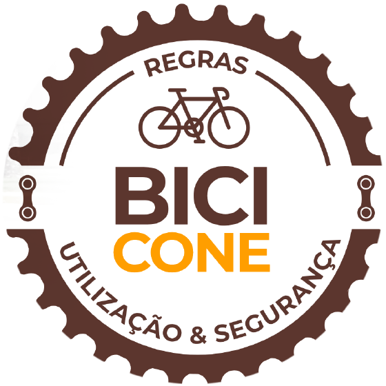
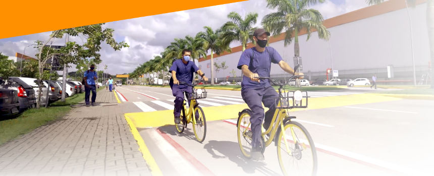
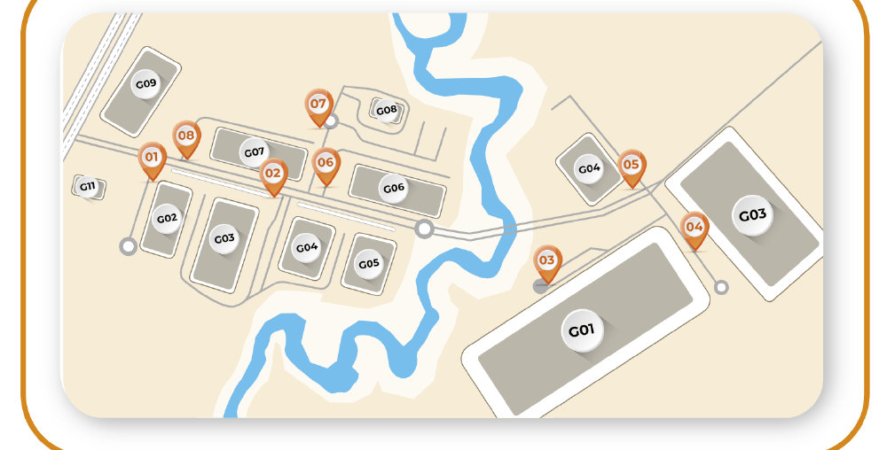

Estações BiciCone

As bicicletas devem ser retiradas e entregues nas estações sinalizadas, indicadas de 01 a 08 no mapa.
Manual de regras
-
Regras de utilização
- A bicicleta é para uso comum dos circulantes, use com cuidado!
- Elas devem ser retiradas e entregues nas estações sinalizadas;
- Antes de utilizar o equipamento, verifique freios e estado dos pneus;
- Evite utilizar equipamentos danificados. Ao perceber qualquer dano, por favor, comunicar a portaria mais próxima.
-
Regras de segurança
- Trafegue apenas na ciclofaixa;
- É proibido dar carona na bicicleta;
- Não transporte peso que possa desequilibrar você e a bicicleta;
- Respeite a faixa de pedestre;
- Não realize manobras indevidas;
- Não use celular ou fone de ouvidos enquanto pedalar.
-
Atenção!
- É proibido o tráfego de bicicletas nas áreas internas das portarias e/ou fora da área de domínio do condomínio;
- Para sua e nossa segurança, as bicicletas são equipadas com dispositivos GPS e monitoradas através do CFTV.
www.conebr.com · @conebr_ · /company/cone-sa